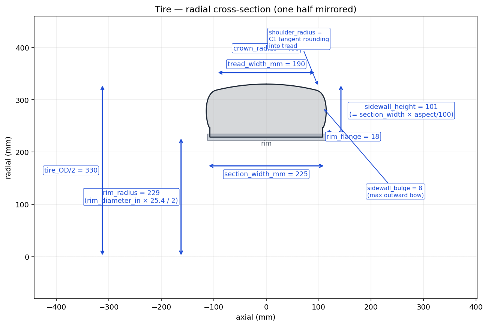

Tire Builder
Revolved-cross-section tire with a C1 tangent shoulder rounding into a tread crown arc. Emits a single solid centered on Z = 0 with its spin axis along Z.
Overview
paramub.tire_builder.build_tire(spec, z_bead_mm) builds the
outer rubber tire. The 2D radial cross-section is revolved 360° about the
spin axis. The sidewall is a single cubic Bezier from the bead to the
tread edge; its end tangent is forced to match the tangent of the tread
arc, so there is no visible "shoulder kink" — the rounding is C1
continuous.
z_bead_mm is the axial offset of each bead from the
midplane. In a normal wheel assembly this is
wheel_width_mm / 2, which the
wheel assembler supplies automatically.
Cross-section & dimensions

Radial cross-section of the tire at the default parameters. Half is drawn explicitly and mirrored across the spin axis. The rim slab (light grey) is shown for scale only — it is not part of the tire solid.Parameter reference
Cross-section (tire spec)
| Parameter | Default | Units | Meaning |
|---|---|---|---|
section_width_mm | 225 | mm | Nominal cross-section width — the 225 in 225/45 R18. |
aspect_ratio | 45 | % | Sidewall height as a percentage of section width — the 45. |
rim_diameter_in | 18 | in | Bead-seat diameter — the 18. Determines rim_radius_mm. |
Sidewall shape
| Parameter | Default | Units | Meaning |
|---|---|---|---|
sidewall_bulge_mm | 8 | mm | Maximum radial outward bow of the sidewall above the rim flange. |
sidewall_bulge_pos | 0.45 | 0..1 | Axial position of the bulge maximum. 0 = at the bead, 1 = at the shoulder. |
shoulder_radius_mm | 30 | mm | How far back the Bezier’s end handle sits from the tread edge. Larger → more visible shoulder rounding. |
Tread
| Parameter | Default | Units | Meaning |
|---|---|---|---|
tread_width_mm | 190 | mm | Axial width of the crown arc footprint. |
crown_radius_mm | 400 | mm | Radius of the tread crown arc. Larger ≈ flatter crown. |
rim_flange_mm | 18 | mm | Radial height of the bead/flange ledge above the rim radius. |
Derived values (read-only properties)
| Property | Formula |
|---|---|
rim_radius_mm | rim_diameter_in × 25.4 / 2 |
sidewall_height_mm | section_width × aspect_ratio / 100 |
tire_od_mm | 2 × (rim_radius + sidewall_height) |
Usage
from paramub import TireSpec, build_tire
spec = TireSpec(section_width_mm=245, aspect_ratio=40, rim_diameter_in=19)
tire = build_tire(spec, z_bead_mm=spec.section_width_mm / 2 + 5) # any axial half-width
When used inside the wheel assembler, z_bead_mm is set
automatically from the spoke spec’s
wheel_width_mm / 2 so the bead lands exactly on the rim’s
flange shoulder.
Implementation notes
shoulder_radius_mm controls the depth of that rounding by
setting how far back P2 sits from P3.
TireSpec.validate() rejects
crown_radius_mm ≤ tread_width_mm/2 + 5 (would make the tread
arc impossible) and bulge positions outside [0, 1].